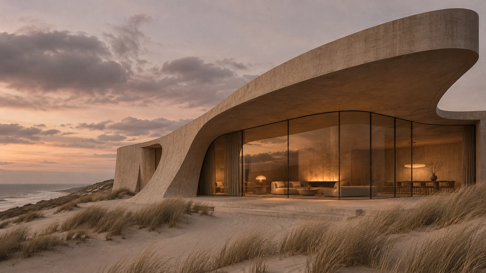

01 / Wonen / Fictief concept
Duinwoning
Een vloeiende dakrand als antwoord op het duin. Een beschutte woonruimte, waar de horizon het interieur binnenkomt. Een materiaalstudie in beton, glas en zandkleur.
Lees de ontwerpgedachte
De gebogen vorm brengt schaduw en beschutting. De terugliggende glazen gevel opent het denkbeeldige huis naar het landschap. Deze visualisatie onderzoekt sfeer en verhoudingen; bouwbaarheid, locatie en vergunningen zijn niet onderzocht.